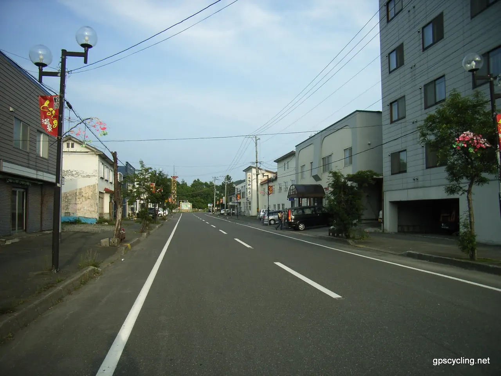
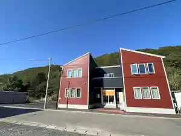
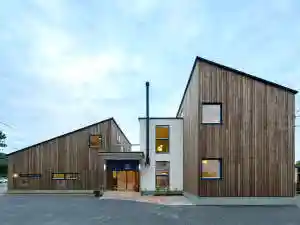
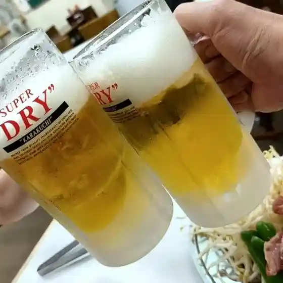
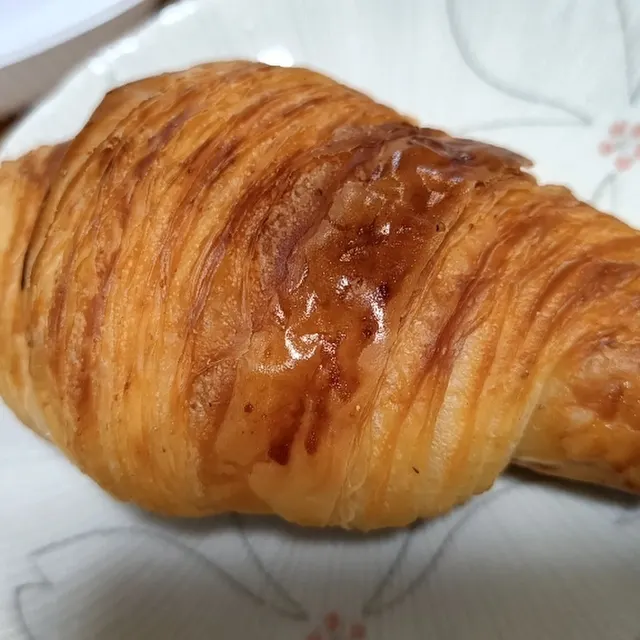
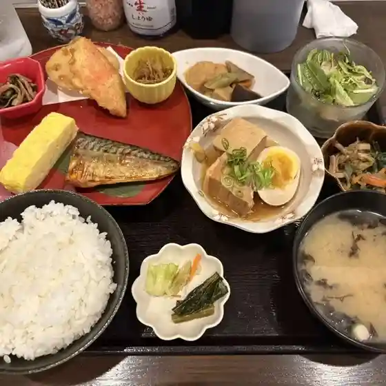
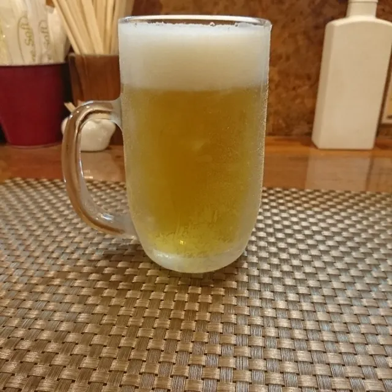
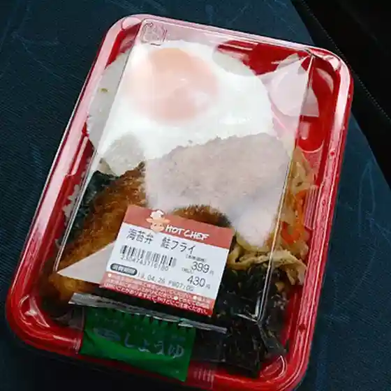

Toyotomi
Toyotomi · Hokkaido
Toyotomi
Highlighted on the Hokkaido map.

Stay
ウカスイモシリ～湯治の宿～
Ukasuimoshiri ~ Touji No Yado ~
Ｔｏｊｉ Ｓｔａｙ アズマシーナ

T O J I S T A Y Azumashiina
とよとみ温泉 川島旅館

Toyotomi Onsen Kawashima Ryokan
Dining
豊富温泉 ふれあいセンター レストラン

Houfu Onsen Fureai Sentaa Resutoran
すずパンCafe

Suzu Pan Cafe
ホテル ウィン

Hoteru Uin
夢一文

Yume Ichibun
心酔 鈴のや

Shinsui Suzu Noya
松竹炭火焼居酒屋

Shouchiku Sumibi Yaki Izakaya
Cafe Ne no Hoshi

Cafe Ne No Hoshi
セイコーマート とよとみ店

Seikoomaato Toyotomi Mise
親爺の家
Oyaji No Ie
松屋旅館
Matsuya Ryokan
丸勝亭
Maru Kachi Tei
ニュー温泉閣ホテル
Nyuu Onsen Kaku Hoteru
星のぶらんこ
Hoshi Noburanko
川島旅館
Kawashima Ryokan
すてーしょん
Suteeshon
豊富温泉 ふれあいセンター 売店
Houfu Onsen Fureai Sentaa Baiten
餅cafe&stay わが家
Mochi Cafe&Stay Waga Ie
セイコーマート エベコロ店
Seikoomaato Ebekoro Mise
ferme
Ferme
サロベツカントリークラブ
Sarobetsukantoriikurabu
サロベツファーム
Sarobetsufaamu
民宿あしたの城
Minshuku Ashitano Shiro
湯の杜ぽっけ
Yu No Mori Pokke
れすとらん 松竹
Resutoran Shouchiku